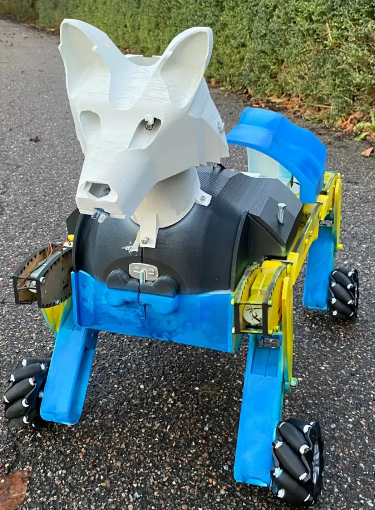
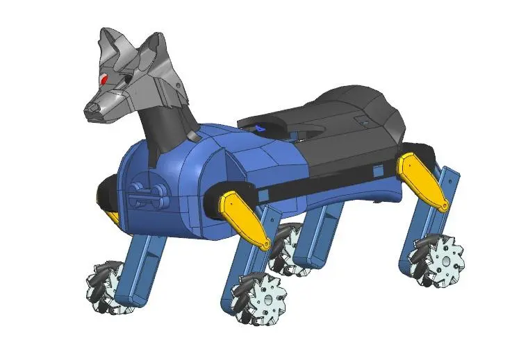
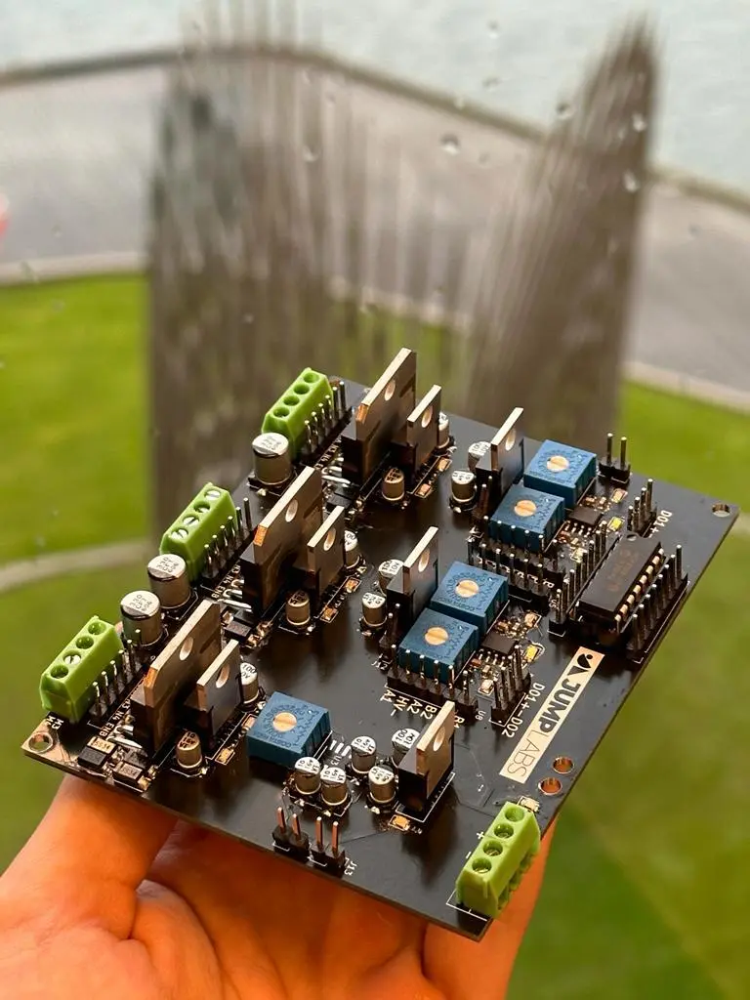
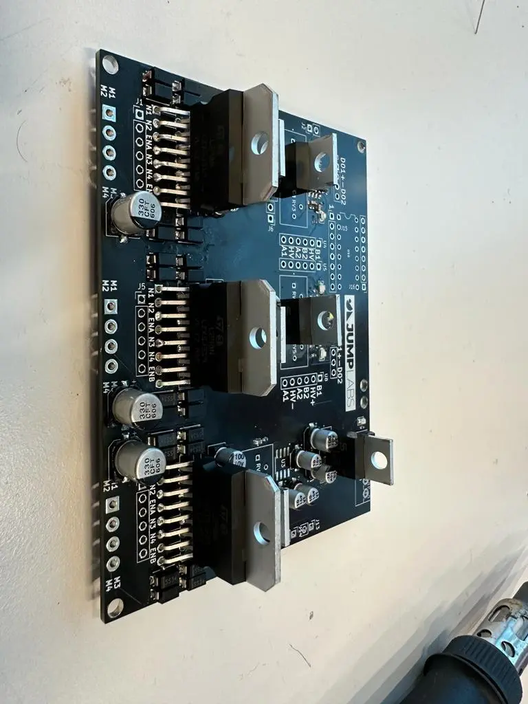
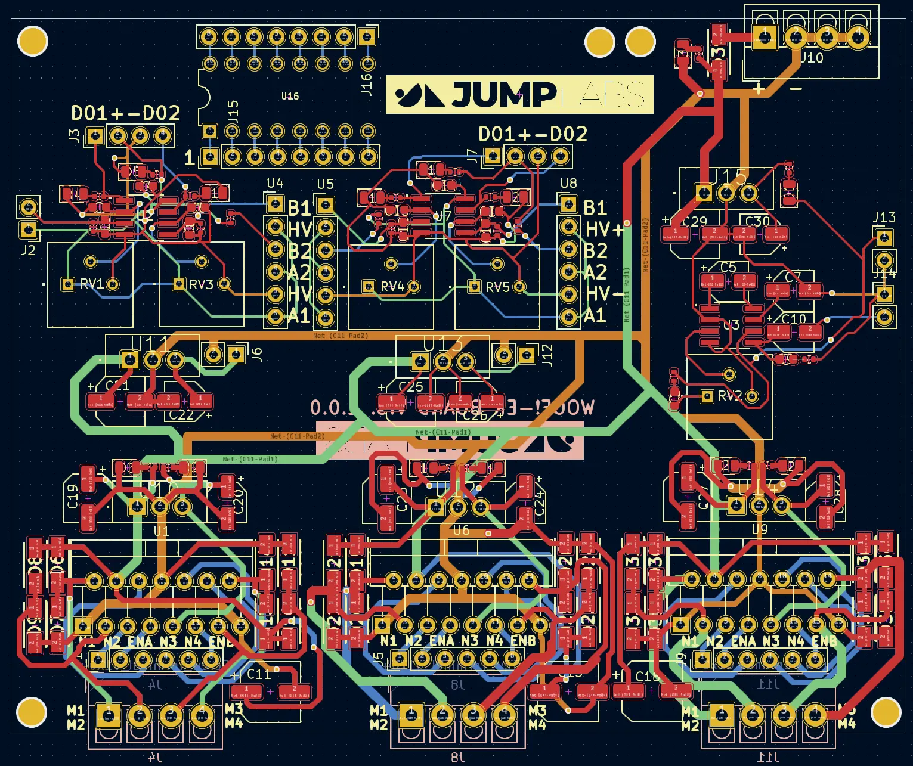
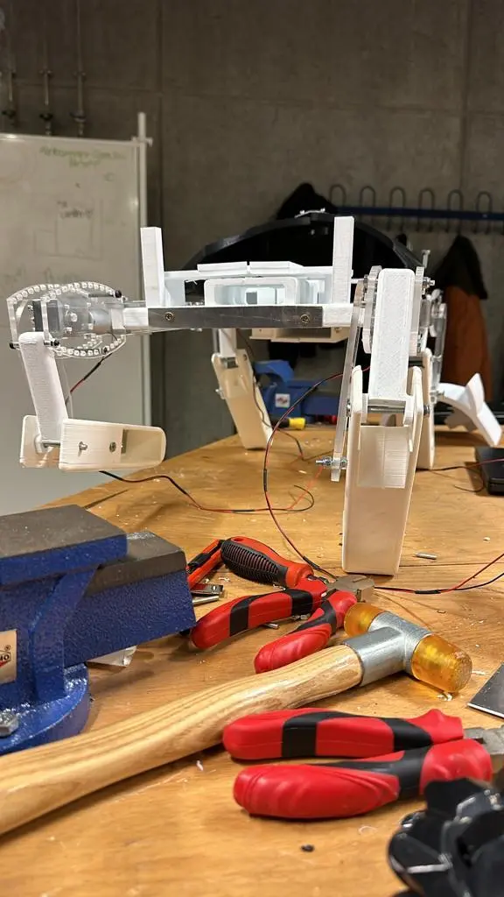
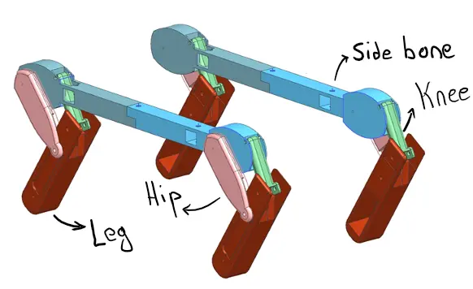
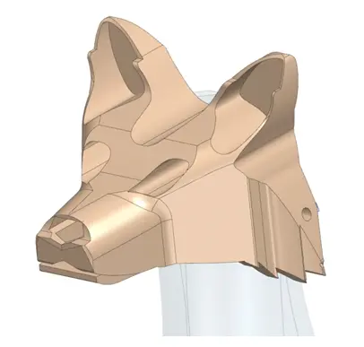

SAP robot dog
A companion robot dog with a camera and gas, smoke and flame sensors to keep a home safe.
Year2024
RoleElectronics and programming
TeamSemester project, team of five
StatusBuilt prototype
No public link: the code is private or the work is a report. The figures below are from the project itself.


01The project
Our first big build: a robot dog that is a companion and a home-safety device at once. It recognises poses with a camera and watches for CO, CO₂, alcohol vapour and fire.
I worked in the electronics and programming pair: circuit and PCB design, soldering and testing, and the code for its modes (explorer, police, pose detector, fire detection and companion).
02What I did
- Designed the sensor, motor-controller, ADC and power modules and the PCB.
- Soldered and tested the boards, then integrated them into the 3D-printed body.
- Wrote the Python behaviours on the Raspberry Pi, including alerts when a gas leak or fire is detected.
03Under the hood
Python (Raspberry Pi)behaviour modes, camera pose detection and sensor alerts.
KiCadthe custom PCB.
3D printingthe body, head and legs.
04Figures





